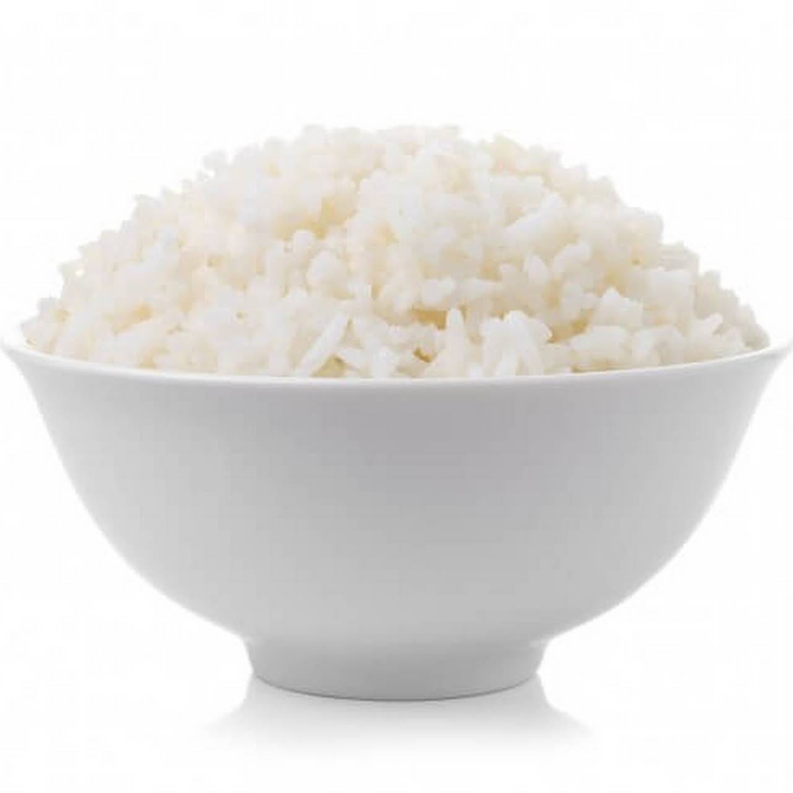

White Rice

Description
Not everyone knows how to cook rice, and that's fine. But everyone CAN learn how to make it quick and easily. I'll be showing you a simple white rice recipe that's easy to remember.
Ingredients
- 1 cup rice
- 2 cups of water
- A pinch of salt
- Tablespoon of olive oil
- 1/4th of an onion
- Bouillon cube
Steps
- Wash your rice! Run the rice under cool-cold water until the water runs clear
- Dice up the piece of onion
- Heat up a pot on the stove to high heat
- Once the pot is hot, add the olive oil
- Add the diced onions to the pot and stir it in to the olive oil until golden brown
- Add in the bouillon cube to the pot and stir until completely melted
- Add in the rice and "toast" it for about 30 seconds to a minute
- Add in the 2 cups of water and stir
- Add in a pinch of salt and stir
- Let the water come to a boil, then cover the pot and turn the stove down to low heat
- White rice should simmer for about 18 minutes
- Once done, remove it from the heat but keep it covered for another 5-10 minutes
- That's it! You should now have perfectly cooked rice